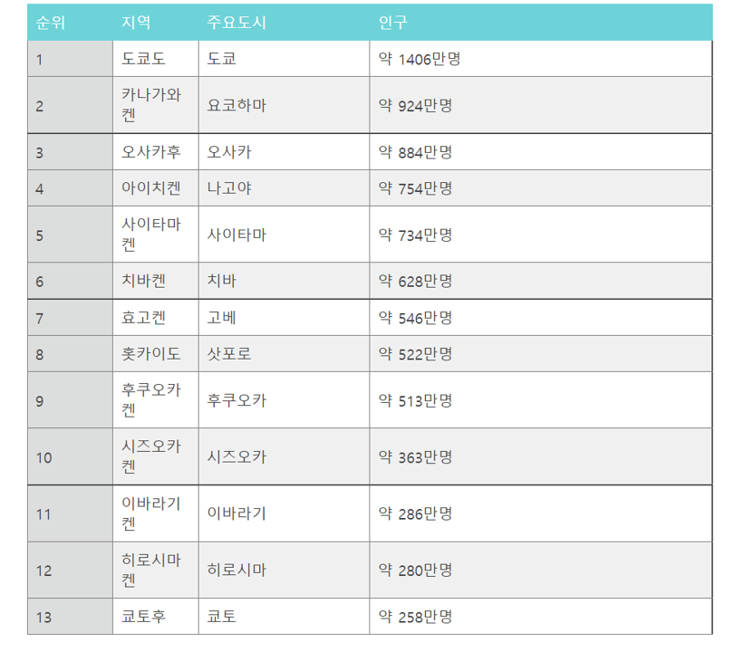
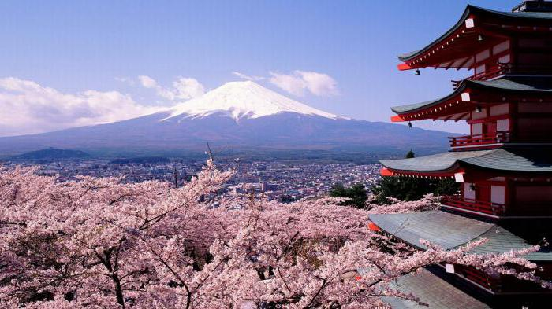
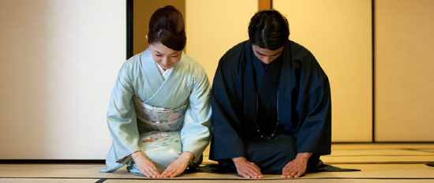
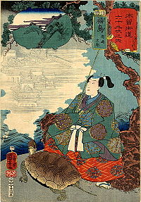
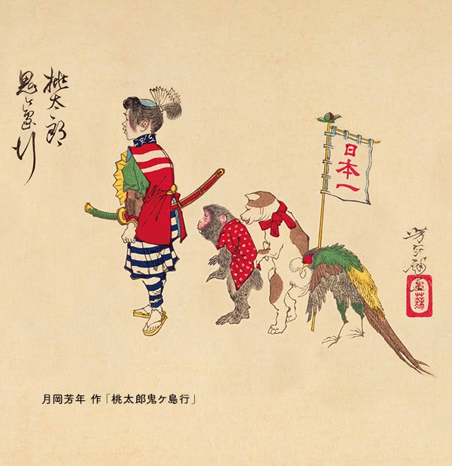

About Japan♥>ㅁ<♥
Wanna listen?
일본은 어떤 곳일까?알아보자!!
국기명 : 일장기
일본의 국기는
일장기 (일본어: 日章旗 닛쇼키, 영어: Flag of Japan)를
의미하며, 히노마루 (日の丸)라고 부른다.
현 일본의 국기는 일본 제국의 국기와 비교할때 붉은원의 채도가
다르다.
★고령화사회★
인구수 : 일본의 총 인구는
1억2622만6585명
TOP10의 도시의 총 인구는 약 7200명만명으로 인구의
약 57%가 살고 있습니다.
수도권(대도시권)이라고 할 수 있는 지역이 도쿄를 포함 도쿄를 감싸고
있는
(도쿄, 카나가와, 사이타마, 치바 4개의 지역)이 4곳의
인구의 합은
약 3700만명으로 전체인구의 약 29%가 살고
있습니다.
그 다음으로 큰 오사카를 중심으로한 칸사이(오사카, 효고(고베), 쿄토, 나라, 시가 5개의 지역)이
5곳의 인구의 합은 약 1963만명으로 전체인구의 약 15%가 살고
있습니다.
한국은 총 인구 5184만명 중 서울, 경기, 인천에 거주하는 숫자가
2592만명으로
수도권에 약 50%의 인구가 살고 있으니,
일본은 한국보다는
수도권 집중이 덜 하다는걸 알 수 있습니다.
일본의 지역인구표
마지막 정리
일본의 국기
일장기
일본의 총 인구
1억 2622만 6585명
TOP10 도시에 인구의 57% 거주
도쿄 중심의 수도권에 29%, 오사카 중심의 칸사이권에
15%
일본에 사는 외국인 숫자는
288만명(그 중 한국인 43만 5천)

일
본
의
명
절
成人式
성인식（成人式）
성인의 날(일본어: 成人の日 세이진노히[*])은 일본의 공휴일
중 하나이다.
1월 두번째 주 월요일이다. 1999년까지는 1월 15일이었다.
20세가 된 사람들을 성인으로 인정해주고 독립된 사회인으로서의
지위를 부여하는날.
선거권도 주어진다. 1948년에 제정. 각지에서 성인식이 열리고
기념품을 나누어준다.
성인이 된 여성들이 기모노 차림으로 성인식에 참가하는 광경이 볼
만하다.
지역에 따라서는 8월에 성인식이 행해지는 곳도 있음.
お盆

오봉（お盆）
돌아가신 선조를 모시는 날. 불단에 불을 켜고 조상의 영혼을
집에 모셔 들인다.
많은 사람들이 귀성길에 오르고 성묘를 가기도 한다. 마을 사람들이
모여 '본오도리'
를 추는 곳도 많다.
'본오도리'는 악기 연주자나 노래하는 사람이 서 있는
대(臺)를 중심으로 빙빙 돌며 추는
독특한 원무. 이는 선조의 영혼을 공양한다는 의미를 가지고
있었는데,
젊은 남녀의 만남의 장소가 되기도 하면서 점차 오락화 됨.
'오봉'은 원래 음력 7월15일에 행해지는 불교행사로서
석가모니가 제자 모친의 혼을 구원한 날이라고 한다.
일본에서는 선조뿐만 아니라 신을 모시는 날이라는 의미도 가지고
있음.
일본의 특징
알아보자!!
지리적 특징

일본은 아시아 대륙 연변(沿邊)에 위치하며 지구 표면적의 0.07%(약
37만km2)를 차지하고 주로
홋카이도·혼슈·시코쿠·규슈의 4섬과
그 속도(屬島) 및 이즈·오가사와라 제도·난세이 제도로
이뤄져 있다.
일본 열도는 태평양을 둘러싼 환태평양 조산대의 일부를 이루며,
도호(島弧)는 그 철면(凸面)을 태평양 쪽으로 향하고 있고,
그 전면에는 깊이 1만m에 달하는 해구를 수반하고 있다.
이들 도호는 신생대에 해당하는 지층으로 심한 조산 운동을 받고
있기 때문에 습곡 산맥이
겹쳐진 채 화산대가 병주하고 활화산이 많으며, 도호에 따라
지하에는 지진이 빈발하며,
때때로 대지진을 일으키고 있다. 그리고 일본 열도에서는
대지진이 일어날 때에는
해안 지대가 1m 나 융기하여 암초를 노출시키거나, 한편으로는
해안이 침강하여 해수가 육지로 침입하는 경우가 있다.
전국의 주요 국토를 따라 설치되어 있는 수준점(水準點)을 수년
수십년마다 개측(改測)하여
보면 토지가 조금씩 융기했다 침강했다 하는 것을 볼 수
있다.
일본 열도는 플라이스토세 말기부터 홀로세 초기에 걸친 빙하기가
끝남에 따라
해수의 침입에 의해 유라시아대륙으로부터 떨어져 분리되기까지는이
대륙과 육지로 연결되어 있었다고 생각되고 있다.
일본은 또한 사방이 바다로 둘러싸여 있는 섬나라이므로 해안선이 길고 여러 가지 형태의 해안선을 볼 수 있다.
해안선은 육지와 바다의 접점으로서 해면수준의 변화·육지의
승강(昇降)에 의해서 육지에 바다가 침입하거나,
반대로 해저(海底)가 육상에 나타나 새로운 육지를 형성하거나 한다.
이러한 해안은 일조일석에 형성된 것이 아니라
해면수준의 변화·육지의 승강·하천의 퇴적작용·파력(波力) 등이 서로
합쳐져서 형성된 것이다.
시마(志摩) 등은 침식작용으로 계곡이 깎여 산지가 침수되어 형성된
리아스식 해안이며, 세토 내해 등의 다도해는 전에는 육지였다.
리아스식 해안·다도해는 화산지형과 함께 일본의 풍광을 대표하는
것으로 국립공원 지역이 많다.
일본 열도는
호상산맥(弧狀山脈)의 배열상 홋카이도 주부, 북일본, 중일본,
서일본의 4개 지형구와 류큐(琉球) 등의 제도(諸島)
부분으로 나뉜다.
일본인의 특징
예의가 바르다!
둘러대서 말한다!
원칙을 지킨다!
사생활을 중요시한다!

우라시마 타로

이 이야기는 일본 각지에 존재하는 용궁 신화이자, 일본의
동화이다.
주인공인 어부 우라시마 타로가 거북이를 구해준 답례로 바닷속
용궁으로 특별한 여행을 떠난다는 이야기이다.
어떤 맑은 날, 우라시마 타로라는 이름의 젊은 어부가 낚시를 하던
중 작은 거북이 한 마리가
아이들에게 괴롭힘을 당하고 있는 걸 발견한다. 타로는 거북이를
구해주고 바다로 돌아가게 하였다.
다음 날, 거대한 거북이가 그에게 나타나 그가 구해준 거북이가
용왕의 딸이며, 용왕이 그에게 감사하고 싶어한다고 말한다.
타로는 용궁성에 가서 용왕과 공주를 만난다.타로는 그 곳에서
그녀와 함께 며칠간 머물렀다.
타로는 다시 그의 마을로 돌아가고 싶었고, 그녀에게 떠나게
해달라고 말했다.
공주는 어떤 일이 있어도 절대 열어보지 말라며 이상한 상자 하나를
주어 떠나보낸다.
그러나 바깥은 이미 300년이 지난 이후였고, 그의 집과 어머니는
모두 사라져 있었다.
슬픔에 빠진 타로는 별 생각 없이 공주가 준 상자를 열어보았다.
그 안에서 하얀 구름이 나오더니 타로를 늙게 만들었다는
줄거리이다.
모든 민담들이 그렇듯이, 이 이야기에도 다양한 각색본이 존재한다.
한국의 우렁각시가 이와 비슷하다.
모모타로

강에서 빨래하는 할머니가 강에서 두둥실 떠내려오는 커다란
복숭아를 건졌고 그 복숭아를 갈라보니,
안에서 아기가 나와서 그 아이에게 '모모타로'라는 이름을
붙이고 길렀다.
이후 성장한 모모타로는 세상을 어지럽히는 오니를 퇴치하고자
할머니와 할아버지로부터 받은 키비당고를 갖고 떠난다.
여행 도중에 만난 개, 원숭이, 꿩에게 키비당고를 주고
동료를 삼아 함께 오니가 살고 있는 '오니가시마'라는 섬으로
떠나,
오니와 그들의 대장 우라를 무찌르고, 오니의 보물을 가지고 돌아와
행복하게 살게 된다.
설화의 원전은 고대 일본의 영웅 전설인
와카타케키비츠히코노미코토 설화로,
모모타로 전설에 나오는 일부 용어에 그 흔적이 남아있다. 다른
의견으로 "서유기를 일본식으로 각색한 이야기"라고 보는
시각이 많다.
일본에서는 매우 유명한 이야기이기에 모티브로 자주 차용된다.
태평양 전쟁 시기에는 모모타로와 동물들은 일본 제국으로,
오니들은 귀축영미로 어레인지되어 프로파간다로 사용된 역사가
있다.